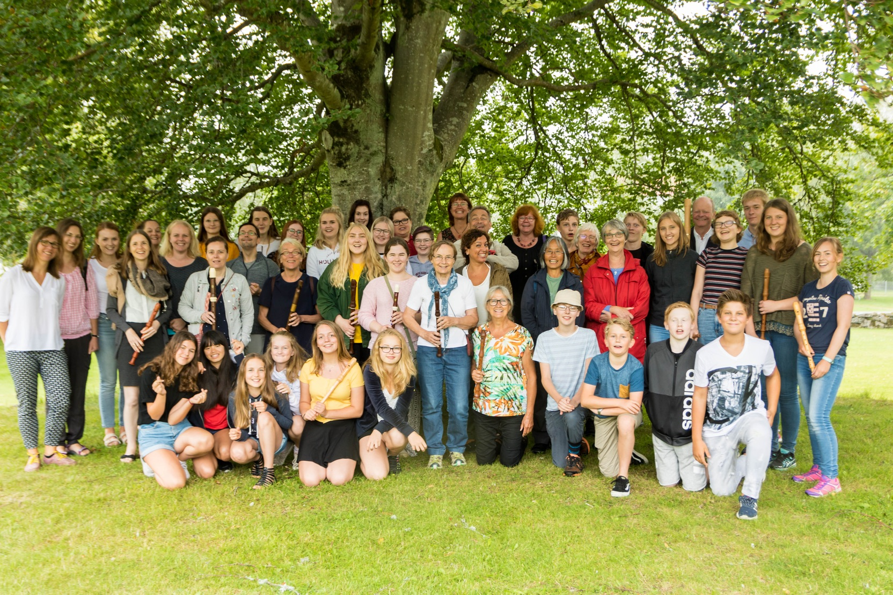
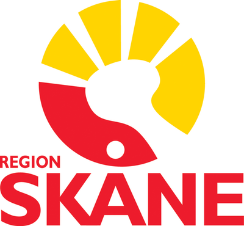
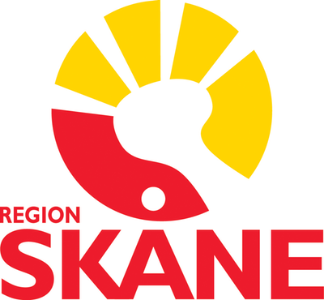

Sommarkurs 7-11 augusti 2018
I somras gick Glimåkra Blockflöjtsdagar av stapeln för tredje året i rad på vackra Glimåkra folkhögskola i Skåne.
Årets kurs var fem dagar lång och fylld av ensemblespel, masterclasses, workshops, teknikpass, konserter, bad och lägeraktiviteter. Här får man undervisning och inspiration av erfarna blockflöjtister och pedagoger: Pia Loman, Annie Lönngren, Sofia Nelson, Emelie Roos.
Anders Renberg var tillbaka som gästlärare och så får kursen besök av den prisbelönta danska blockflöjtsensemblen Sirena. Dessutom kom Lovisa Duprat som studerar blockflöjt och komposition vid Malmö Musikhögskola. Med sig har Lovisa en ny komposition, skriven speciellt för Glimåkra Blockflöjtsdagar!
Det fanns två kurser att välja mellan:
- Ensemblekursen. Denna kurs är för dig som är 12 år eller äldre. Här spelar vi både i stora och små ensembler. Vi vill att du som går denna kurs ska ha viss notläsningsvana.
- Solokursen. Denna är i första hand för dig som går, eller är intresserad av att söka en högre musikutbildning i blockflöjt. Här spelar du kammarmusik samt får lektioner i masterclass-form.

Plats: Glimåkra Folkhögskola
Deltagare 2017
Plats: Glimåkra folkhögskola
Tid: 7-11 augusti 2018
Kostnad för anmälningsavgift, undervisning, mat och logi i dubbelrum 5 dagar:
- Ensemblekurs - 2650 kr*
- Solokurs - 3050 kr*
* Medlemmar i Föreningen för Tidig Musik ges 150 kr rabatt.
Tillägg för enkelrum: totalt 400 kr
Betalning senast den 31 juli
till Flautissimos bankkonto i SEB: 5675 33 027 00, ange deltagarens namn på meddelande-raden!
För betalning från utlandet: IBAN : SE4850000000056753302700 BIC : ESSESESS Föreningen Flautissimo Skandinaviska Enskilda Banken
Anmälan till ensemblekurs eller solokursKontakt: glimakrablockflojtsdagar@gmail.com
Tjo flöjt!
Annie, Emelie, Pia och Sofia
Glimåkra Blockflöjtsdagar genomfördes med stöd av:
 
